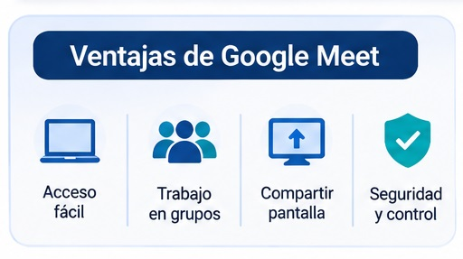
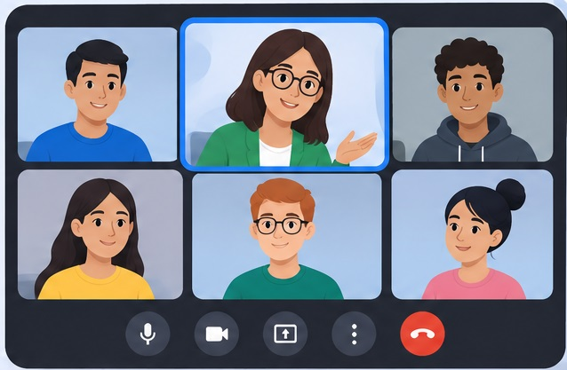
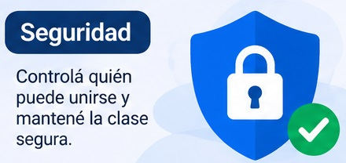

Para quién es este recurso
Está pensado para docentes de la Dirección General de Educación Técnico Profesional (DGETP) y de la Dirección General de Educación Secundaria (DGES), organismos de la Administración Nacional de Educación Pública (ANEP), que quieran dictar clases sincrónicas con Google Meet, desde la primera videollamada hasta la gestión de grupos.
No hace falta experiencia previa. Cada sección se puede leer por separado y usar en el aula o en la sala de profesores.
Qué es un REA
Los Recursos Educativos Abiertos son materiales de enseñanza, aprendizaje e investigación disponibles públicamente, con licencias que permiten usarlos, adaptarlos y compartirlos (UNESCO, 2019). Este recurso se publica con licencia CC BY 4.0: podés copiarlo, modificarlo y redistribuirlo citando la autoría (Creative Commons, s. f.).
Por qué usar Meet en tus clases
Google Meet forma parte de Google Workspace for Education, y se conecta con Calendar, Classroom y Drive (Google, s. f.-b). Eso reduce los pasos entre planificar y dar la clase.

Se entra con un enlace
Los estudiantes se unen desde el navegador, sin instalar programas.
Funciona con lo que ya usás
La reunión se agenda desde Calendar y se comparte en Classroom.
Participación variada
Chat, mano levantada, reacciones y subtítulos para distintos modos de participar.
Control para quien enseña
El anfitrión decide quién entra, quién habla y quién presenta.
Funciona en celular
Hay aplicación para Android e iOS, útil cuando la conectividad o los equipos son limitados.
Grabación de las clases
Según la edición de la cuenta, se puede grabar la clase y guardarla en Drive.
Importante: algunas funciones (grabación, salas para grupos, encuestas, asistencia) dependen de la edición de Workspace for Education y de la configuración de la institución. Verificá en tu cuenta qué tenés disponible (Google, s. f.-a).
Tu primera clase, paso a paso
Ingresá con tu cuenta institucional
Abrí meet.google.com con la cuenta que te asignó tu centro, para acceder a las funciones educativas.
Crea una reunión o evento
Usá “Nueva reunión” para una clase inmediata, o un evento en Google Calendar con videollamada de Meet para dejarla fijada en horario.
Compartí el enlace
Pegalo en el aula virtual o en el grupo de la clase. Si usás CREA o Classroom, podés incluirlo en el curso para que quede siempre a mano.
Probá audio, video y conexión
Antes de entrar, revisá micrófono y cámara. Conviene ingresar unos minutos antes y recibir a cada estudiante.
Dictá y cerrá la clase
Presentá tu material, abrí espacios de participación y, al final, dejá las tareas escritas en el chat o en el aula virtual.
Funciones que vas a usar todos los días

En una clase típica ves a los participantes en una cuadrícula, con quien habla destacado, y los controles en la parte inferior: micrófono, cámara, presentar pantalla, más opciones y salir. Los apartados siguientes explican qué hace cada uno y cómo usarlo con tu grupo.
Mostrar contenido
Compartir pantalla
Al presentar, elegís qué ven los demás: una pestaña, una ventana o toda la pantalla (Google, s. f.-a). Para clases conviene empezar por la pestaña o la ventana: tus notificaciones, correos y otras pestañas no se ven.
Consejos: si el video o el audio vienen de una pestaña, marcá la opción de compartir sonido; antes de empezar, cerrá lo que no sea necesario; y mirá el material desde la ventana de Meet para saber qué está viendo el grupo.
Presentar desde Slides, Docs y Sheets
Las aplicaciones de Google ofrecen un botón para presentar directamente en la reunión. Es práctico para clases con diapositivas, porque las notas del orador y la edición en vivo siguen a tu alcance. Los estudiantes pueden recibir el archivo en Drive para repasar después.
Pizarra
Meet ya no incluye una pizarra propia. Mirá la sección Pizarra para ver alternativas.
Participación del grupo
Chat, mano levantada y reacciones
Ordenan la participación en grupos grandes: el estudiante levanta la mano para pedir la palabra y usa el chat para dudas breves sin interrumpir. Acordá al comienzo cuándo se usa cada uno.
Encuestas
Disponibles en algunas ediciones. Sirven para verificar comprensión en vivo, elegir entre opciones o abrir una discusión con una pregunta rápida. Los resultados se pueden mostrar al grupo.
Preguntas y respuestas
Permite que el grupo envíe preguntas y que las más votadas suban primero. Es útil en clases expositivas o con mucha gente, para responder con orden al final.
Gestión de la clase
Controles del anfitrión y coanfitriones
Como anfitrión podés silenciar, quitar participantes, limitar el chat y controlar quién presenta. En algunas ediciones podés designar coanfitriones (por ejemplo, otro docente o un adscripto) para dividir la tarea (Google, s. f.-a).
Salas para grupos
Divide la clase en equipos pequeños. Mirá Trabajo en grupos pequeños.
Asistencia
En algunas ediciones, Meet genera un informe de quienes estuvieron en la clase, que puede ayudar con el registro. Confirmá con tu centro qué datos se pueden guardar y cómo.
Grabación y transcripción
Cuando tu edición lo habilita, la clase se graba y se guarda en Drive para quienes faltaron. Avisá al grupo antes de grabar y consultá la normativa de tu centro sobre imagen y datos personales. Algunas ediciones también permiten transcripciones y notas generadas con inteligencia artificial.
Fijar y diseño de pantalla
Podés fijar tu video, o el material, para verlo grande, y cambiar cómo se distribuyen los participantes según la actividad.
Accesibilidad y conectividad
Subtítulos y traducción
Los subtítulos automáticos muestran lo que se dice en pantalla y ayudan a estudiantes con dificultades auditivas, con mala conexión de audio o que prefieren leer. En algunas ediciones también hay traducción de subtítulos.
Cancelación de ruido y calidad de video
La reducción de ruido mejora el audio en hogares y espacios compartidos. Si la conexión falla, apagá las cámaras o bajá la calidad de video para sostener el audio, que es lo más importante en una clase.
Meet en el celular
Con la aplicación móvil se puede participar casi con las mismas funciones básicas. Es una buena opción cuando el estudiantado no tiene computadora.
Pizarra: qué usar ahora
Google Jamboard, la pizarra que se integraba con Meet, se cerró a fines de 2024. Google propuso que Meet trabaje con herramientas de pizarra de terceros, como FigJam, Lucidspark y Miro (Google Workspace Updates, 2023). Estas son opciones prácticas para docentes. Mi recomendación es utilizar Excalidraw
| Opción | Cómo se usa | A tener en cuenta |
|---|---|---|
| Pizarra de terceros (FigJam, Lucidspark, Miro, Excalidraw) | Se abre desde la reunión o se comparte el enlace al tablero. | Puede requerir cuenta y tener límites en el plan gratuito. Verificá la disponibilidad en tu cuenta institucional. |
| Google Slides o Docs compartido | Una diapositiva en blanco o un documento donde escriben docente y estudiantes a la vez. | Ya forma parte de Workspace. Dale permiso de edición solo a quienes participan. |
| Tableta o celular con lápiz | Escribís a mano en una aplicación de notas y compartís esa ventana. | Sirve para ecuaciones, esquemas y dibujos técnicos. Probalo antes de la clase. |
Trabajo en grupos pequeños
Las salas para grupos (breakout rooms) dividen la clase en subgrupos para discutir, resolver un problema o armar un proyecto, y luego todos regresan a la sala principal. En la formación técnica y en talleres de Secundaria, sirven para trabajar por equipos con una consigna concreta.
Dejá la consigna escrita en el chat antes de abrir las salas, indicá el tiempo disponible y pasá por cada una para acompañar. La disponibilidad depende de la edición de la cuenta (Google, s. f.-a).
Seguridad y convivencia en la clase virtual
Una clase ordenada empieza antes de entrar. Estas prácticas reducen interrupciones y cuidan la privacidad de los estudiantes.

- Creá la reunión desde una cuenta institucional.
- No publiques el enlace en redes abiertas.
- Admití personalmente a quienes piden entrar.
- Usá los controles del anfitrión para silenciar o quitar participantes.
- Acordá normas de cámara, micrófono y chat al inicio del curso.
- Avisá cuando se grabe la clase.
Lista rápida antes de empezar
- Conexión y batería revisadas
- Material abierto en pestañas listas
- Consigna de la clase escrita
- Enlace compartido en el aula virtual
- Plan alternativo si falla la conexión
Pensá siempre en estudiantes con poca conectividad: dejá el material disponible también fuera de la videollamada, por ejemplo en CREA u otra plataforma educativa.
Referencias
Formato APA 7.ª edición. Los sitios web cambian con frecuencia: al reutilizar este recurso, verificá los enlaces y actualizá las fechas de recuperación. Última revisión: 31 de octubre de 2026.
- Administración Nacional de Educación Pública. (s. f.). Sitio institucional de ANEP. Recuperado el 31 de octubre de 2026, de https://www.anep.edu.uy
- Agencia de Gobierno Electrónico y Sociedad de la Información y del Conocimiento. (s. f.). Declaración de accesibilidad. Recuperado el 31 de octubre de 2026, de https://www.gub.uy/agencia-gobierno-electronico-sociedad-informacion-conocimiento/declaracion-accesibilidad
- Creative Commons. (s. f.). Atribución 4.0 Internacional (CC BY 4.0). Recuperado el 31 de octubre de 2026, de https://creativecommons.org/licenses/by/4.0/deed.es
- Google. (s. f.-a). Ayuda de Google Meet. Google Ayuda. Recuperado el 31 de octubre de 2026, de https://support.google.com/meet
- Google. (s. f.-b). Google Workspace for Education. Google for Education. Recuperado el 31 de octubre de 2026, de https://edu.google.com
- Google Workspace Updates. (2023, 28 de septiembre). The next phase of digital whiteboarding for Google Workspace [Entrada de blog]. https://workspaceupdates.googleblog.com/2023/09/the-next-phase-of-digital-whiteboarding-for-google-workspace.html
- Menza, B. (2026). Clases virtuales con Google Meet: guía para docentes de DGETP y DGES [Recurso Educativo Abierto]. Licencia CC BY 4.0.
- OpenAI. (2026). ChatGPT [Modelo de lenguaje de gran tamaño]. https://chatgpt.com
- Poder Ejecutivo. (2022, 22 de diciembre). Decreto 406/022 [Reglamentación del artículo 88 de la Ley N.º 19.924 sobre accesibilidad digital]. IMPO. https://www.impo.com.uy/bases/decretos/406-2022
- UNESCO. (2019). Recomendación sobre los recursos educativos abiertos (REA). https://www.unesco.org/es/legal-affairs/recommendation-open-educational-resources-oer
- World Wide Web Consortium. (2018). Web content accessibility guidelines (WCAG) 2.1. https://www.w3.org/TR/WCAG21/